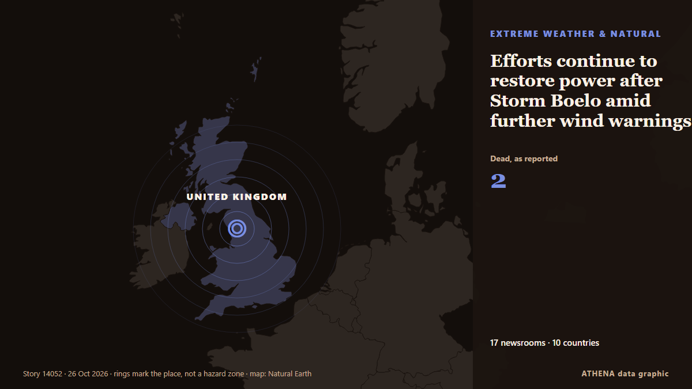

Efforts continue to restore power after Storm Boelo amid further wind warnings

The UK Met Office said Storm Boelo will bring strong winds and heavy rain to parts of Northern Ireland, Scotland and northern England at the weekend. von RTÉ News
Unabhängig gemeldet von 17 Medien in 10 Ländern seit dem 19. Okt., zuerst von The Irish Times; die Berichterstattung ist abgeklungen. ATHENA stuft das Risiko als erhöht ein (4.6/10), vor allem wegen der Schwere des beschriebenen Schadens und seiner geografischen und sektoralen Reichweite. Die Konfidenz liegt bei 85 % (hoch): 17 Medien bestätigen es unabhängig, bei einer mittleren Verlässlichkeit der Quellen von 72 %. Wer berichtete: 11 Medien in Vereinigtes Königreich · United Kingdom, 5 Medien in Türkei · Turkey, 4 Medien in Irland · Ireland. Die Berichterstattung lief von 19. Okt. bis 26. Okt., über 174 Stunden.
Warum es wichtig ist: Entwicklungen bei Energie und Rohstoffen beeinflussen Kraftstoff- und Strompreise, Versorgungssicherheit und Klimaziele.
Was sich geändert hat: 8 neue Berichte von 8 Redaktionen in den 24 Stunden bis 26. Okt..
Erste Schlagzeile: Storm Boelo lashes UK, cutting power and cancelling flights
Schlagzeilen werden auf Englisch angezeigt, wie veröffentlicht.
Auf einen Blick
Ausgewählt, bewertet und geschrieben nach der veröffentlichten Methodik von ATHENA. Kein Redakteur greift in einzelne Ereignisse ein. So entsteht ATHENA ›
| 19 Oct 09:59 UTC | 1 |
|---|---|
| 19 Oct 21:59 UTC | 0 |
| 20 Oct 09:59 UTC | 0 |
| 20 Oct 21:59 UTC | 0 |
| 21 Oct 09:59 UTC | 0 |
| 21 Oct 21:59 UTC | 0 |
| 22 Oct 09:59 UTC | 2 |
| 22 Oct 21:59 UTC | 0 |
| 23 Oct 09:59 UTC | 2 |
| 23 Oct 21:59 UTC | 0 |
| 24 Oct 09:59 UTC | 1 |
| 24 Oct 21:59 UTC | 5 |
| 25 Oct 09:59 UTC | 11 |
| 25 Oct 21:59 UTC | 2 |
| 26 Oct 09:59 UTC | 3 |
| 19 Oct 15:55 UTC | 3.2 |
|---|---|
| 22 Oct 09:06 UTC | 4.3 |
| 22 Oct 12:11 UTC | 4.8 |
| 28 Oct 16:42 UTC | 4.6 |
| 28 Oct 16:42 UTC | 4.6 |
Warum diese Zahlen
Bedeutung
Risiko
Konfidenz
Die Berichterstattung – wer berichtete, und wann
Schlagzeile wie veröffentlicht · öffnet das Original- The Irish Times · Irland · IrelandFirst storm of season could be named in advance of ‘very windy’ conditions
- RTÉ News · Irland · IrelandStorm Boelo to bring 'strong winds' to Northern Ireland
- Anadolu Agency (English) · Türkei · TurkeySecond named storm of season forecast to hit UK this weekend
- Anadolu Agency (English) · Türkei · TurkeyThousands without power as UK prepares for Storm Boelo
- ABC News Australia · Australien · AustraliaWeekend washout for most states as storm season intensifies
- The Guardian · Vereinigtes Königreich · United KingdomStorm Boelo to bring 80mph gusts and heavy rain to parts of UK
- The Guardian · Vereinigtes Königreich · United KingdomStorm Boelo: Travel disrupted and events cancelled as UK hit by wind and rain
- RTÉ News · Irland · IrelandYellow alerts issued for tomorrow as 5,000 without power
- Anadolu Agency (English) · Türkei · TurkeyTravel disrupted in UK, hundreds of homes left without power as Storm Boelo hits isles
- The Irish Times · Irland · IrelandFurther weather warnings issued as thousands remain without power after Storm Boelo
- NL Times · Niederlande · NetherlandsHigh winds from Storm Boelo force dozens of Schiphol flight cancellations
- The Guardian · Vereinigtes Königreich · United KingdomTwo dead and tens of thousands of properties without power as Storm Boelo batters UK
- Yorkshire Post · Vereinigtes Königreich · United KingdomStorm Boelo: The Yorkshire attractions and events affected by high winds as storm hits
- Yorkshire Post · Vereinigtes Königreich · United KingdomDelays, cancellations and diversions at Leeds Bradford Airport as Storm Boelo hits
- Yorkshire Post · Vereinigtes Königreich · United KingdomWatch moment Ryanair flight lands in Storm Boelo’s strong winds at Leeds Bradford Airport
- Türkiye Today · Türkei · TurkeyStorm Boelo cuts power to thousands in UK, cancels flights
- Jamaica Observer · Jamaika · JamaicaStorm Boelo lashes UK, cutting power and cancelling flights
- The Straits Times · Singapur · SingaporeStorms batter Europe hitting power supplies, flights and phones
- Arab News · Saudi-Arabien · Saudi ArabiaStorms batter Europe hitting power supplies, flights and phones
- The Scotsman · Vereinigtes Königreich · United KingdomMan dead after being hit by falling tree in Storm Boelo
- Channels TV · NigeriaPower Out, Flight Cancelled As Storm Boelo Hits UK
- APA (English) · Aserbaidschan · AzerbaijanStorm Boelo has delayed more than 1,500 flights in Britain
- Yorkshire Post · Vereinigtes Königreich · United KingdomStorm Boelo: Major train service delays and cancellations across Yorkshire including from Leeds due to Storm Boelo
- Anadolu Agency (English) · Türkei · Turkey2 killed as Storm Boelo batters UK, leaves 90,000 without electricity
- Liverpool Echo · Vereinigtes Königreich · United KingdomStorm Boelo LIVE as Merseyrail services disrupted and road closures remain in place
- Evening Standard (London) · Vereinigtes Königreich · United KingdomFresh warnings issued as strong winds and heavy rain forecast after two storms
- Belfast Telegraph · Vereinigtes Königreich · United KingdomEfforts continue to restore power after Storm Boelo amid further wind warnings